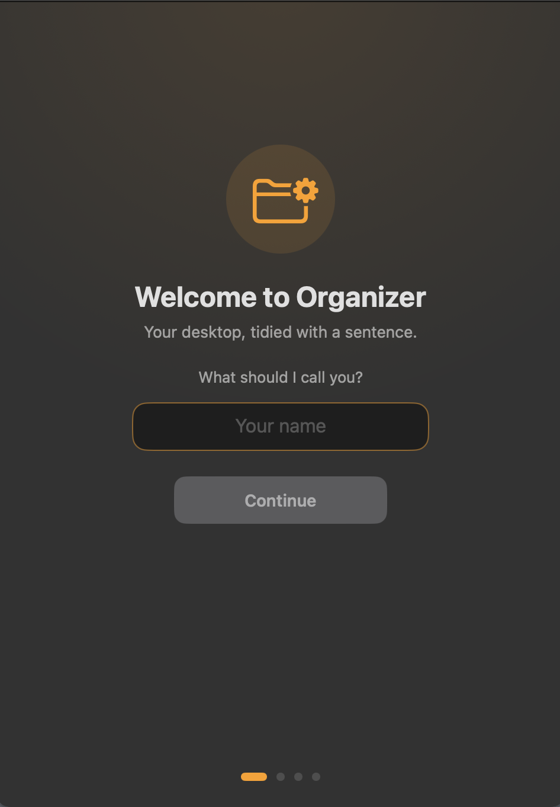
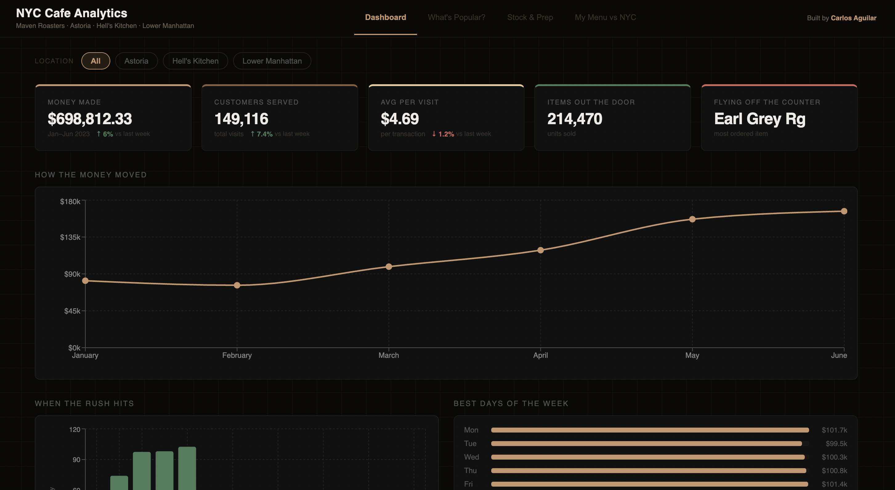

AI Organizer
A file organizer that tidies your desktop from a plain sentence, powered by an AI model that runs locally on your computer.
Computer Science Student
I am a Computer Science student interested in software development and problem solving. I am looking for internship opportunities to grow my skills and gain real world experience.
| Category | Skills |
|---|---|
| Languages | Java, Python, C, JavaScript |
| Web | HTML, CSS |
| Tools | Git, VS Code |

A file organizer that tidies your desktop from a plain sentence, powered by an AI model that runs locally on your computer.

A dashboard analyzing over 149,000 transactions across three NYC cafe locations, built to show cafe owners what sells and when.
A 3D graphics engine that started as a class project and was later extended to render with OpenGL.